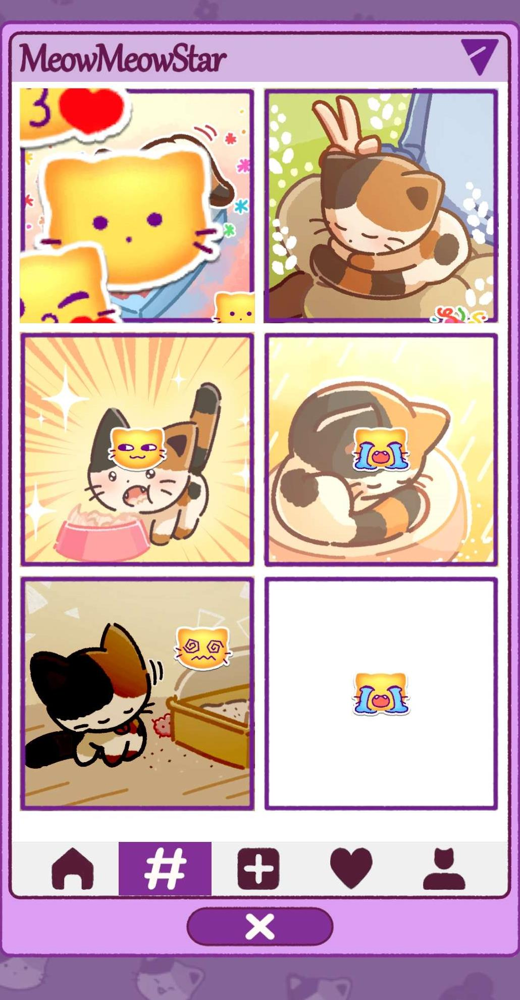
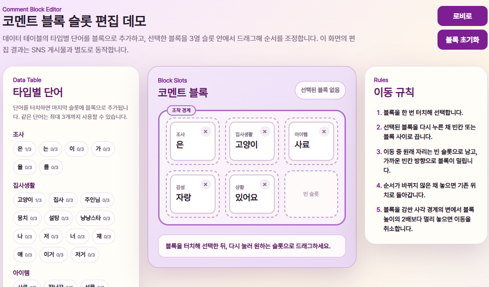
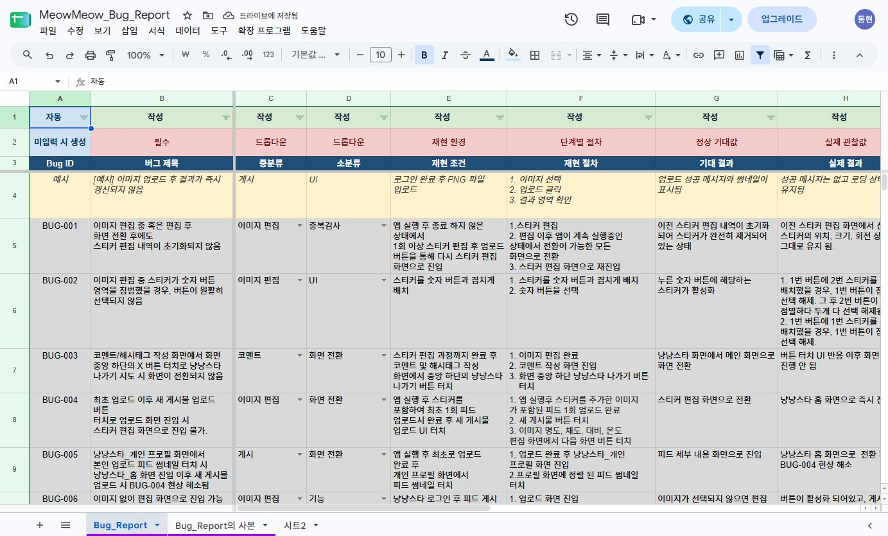

02 / 콘텐츠 제안과 협업
기업 협업 / 추가 콘텐츠 제안
프로젝트 목록 ↗냥냥스타
유저마다 다른 피드를 만들 수 있도록 콘텐츠를 제안했습니다.
스토리를 전달하는 피드에 유저마다 다른 콘텐츠가 쌓이도록, 이미지를 편집하고 공유하는 기능을 제안했습니다. 기업 요구와 제작 여건에 맞춰 다룰 이미지의 범위를 조정하고, 코멘트는 기존 머지 게임의 드래그 조작을 활용해 구성했습니다. 조작 의도를 글로만 전달하기 어려운 부분은 프로토타입으로 보여주고, 구현 결과와 차이가 나는 동작은 QA 자료로 추적했습니다.

피드 콘텐츠와 조작 방식
이미지는 편집하고,
코멘트는 블록으로 조합합니다.
코멘트를 자유롭게 입력하게 하면 금지어 처리 부담이 커질 수 있다고 봤습니다. 그래서 단어 블록을 조합하는 방식을 제안하고, 기존 머지 게임에서 사용하는 드래그 조작을 활용하도록 설계했습니다.

- 참여 기간
- 2026.05.04–07.16
- 내 역할
- 시스템 기획
- 협업 규모
- 기획 8명, 개발 4명
- 결과물의 성격
- 추가 콘텐츠 제안서
검토용 프로토타입, QA 자료
공유할 이미지를 게임에서 얻은 CG로 좁혔습니다.
냥냥스타에는 머지 플레이와 골드를 사용하는 건설 요소가 있었지만, 스토리를 전달하는 피드의 콘텐츠는 부족했습니다. 유저마다 다른 피드를 볼 수 있게 하고자 자유롭게 스크린샷을 공유하는 기능을 구상했습니다. 다만 기업 요구와 서버 비용, 개발 난이도를 함께 고려했을 때 공유할 이미지의 범위를 조정할 필요가 있었습니다.
그래서 게임에서 얻은 CG를 편집해 업로드하는 방식으로 범위를 줄였습니다. 다룰 이미지는 제한하되, 유저가 편집한 이미지를 다른 유저도 볼 수 있는 구조는 유지했습니다. 자유롭게 올릴 수 있는 이미지의 종류보다, 각자 다른 게시물을 만들고 공유한다는 목적을 남기는 쪽으로 제안을 조정했습니다.
자유 스크린샷 공유
공유할 이미지의 자유도는 높지만, 서버 비용과 개발 부담을 함께 고려해야 했습니다.
획득 CG 편집과 업로드
게임에서 얻은 CG로 범위를 좁히고, 편집한 이미지를 공유하는 구조는 유지했습니다.
조작 의도를 프로토타입과 명세로 전달했습니다.
코멘트 블록의 조작을 글로만 설명하기는 어려웠습니다. 블록을 드래그한다는 설명 외에도 어떻게 배열되는지, 같은 블록을 중복해서 넣을 수 있는지, 드래그를 취소하면 어떻게 처리되는지를 전달할 필요가 있었습니다. 이를 보여주기 위해 HTML 프로토타입을 만들고 세부 동작을 검수 기준으로 정리했습니다.
블록 배열과 중복 제한, 드래그 취소, 자동 스크롤을 기준으로 구현 결과를 확인했습니다. 일부 조작과 UI가 의도한 방식으로 나오지 않아, 차이가 나는 동작은 QA 이슈로 남기고 드래그 오류를 반복해서 추적했습니다.

피드 게시 흐름과 검토 자료 펼치기

상세 명세를 늦게 전달한 점은 제 작업에서 보완해야 할 부분이었습니다. 여기에 기업 피드백도 예정보다 이틀 늦어지면서 시스템 절반을 다시 설계했고, 초기 기능 일부는 범위에서 제외됐습니다. 다음에는 핵심 규칙과 예외, UI를 그렇게 설계한 이유를 먼저 정리해 전달하고, 외부 피드백을 반영할 시간을 일정에 확보할 계획입니다. 조작을 보여주는 프로토타입과 함께 구현에 필요한 조건도 제때 전달하려고 합니다. 이 자료는 정식 업데이트가 아닌 추가 콘텐츠 제안입니다.